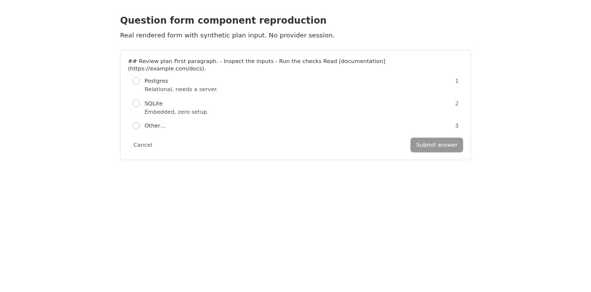
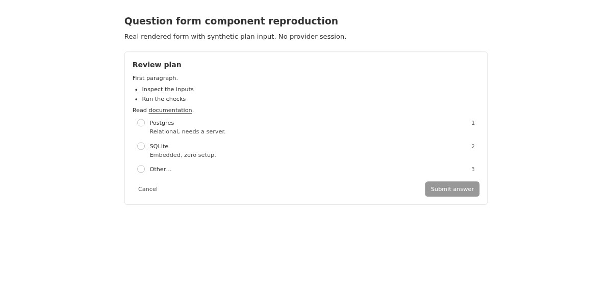

#8155 · Question prompts bypass Markdown rendering
Trusted base: ce81bd53a0d83fadf2c8f832f152eab3b24d68bf on origin/main.
Verdict: REPRODUCED · Root-cause confidence: high · Label: confirmed-repro
1. TL;DR
A question containing a Markdown plan reaches the shared form with its line breaks intact, but the visible prompt is inserted into an ordinary text div. Consequently headings, list markers and link syntax remain literal, while normal browser whitespace handling collapses the line breaks. The real question form reproduces this with synthetic input on current main in two clean checkouts. Reusing bb’s existing host-owned Markdown renderer fixes the presentation without changing the interaction payload or answer handling. This is a component-boundary reproduction, not a replay of an OMP session.
2. Claims vs findings
| Claim | Finding | Evidence |
|---|---|---|
| Markdown plans appear flattened in the question form. | Verified | The focused test cannot find a heading; the browser screenshot shows literal syntax in a collapsed paragraph. |
| Heading, list and link formatting should remain readable. | Verified defect | Before: no semantic heading, list items or link. After: all are present, and selecting an option still submits the expected answer. |
| The recorded request originated from the ACP provider. | Not replayed | No reporter runtime data or live provider was used. Trusted code shows provider questions use this same shared form. |
| The original macOS and OMP version combination exhibits this behavior. | Unverified environment | The reproduction uses Linux and synthetic component input. It does not establish provider-specific transport behavior. |
3. Environment
- Public target repository: get-bb/bb; trusted main commit ce81bd53a0d83fadf2c8f832f152eab3b24d68bf.
- Debian GNU/Linux 12; Node v22.19.0; pnpm 9.15.0; Vitest 4.1.12; headless Chromium 156.0.8078.108.
- Two separately cloned checkouts at the same commit, each with a frozen install, SDK build and full Turbo build. No provider process, user store, account or bb development server was needed.
- Visual evidence: actual React test-rendered DOM with the trusted app’s compiled CSS, served only on loopback port 49155 in a fresh browser. No product data directory was created.
4. Minimal reproduction
Start from a new checkout of the trusted target. Apply only the locally authored regression patch below; it adds no production changes or dependencies.
git clone https://github.com/get-bb/bb.git bb-question-repro cd bb-question-repro git checkout --detach ce81bd53a0d83fadf2c8f832f152eab3b24d68bf pnpm install --frozen-lockfile --prefer-offline pnpm exec turbo run build --filter=@get-bb/plugin-sdk pnpm exec turbo run build git apply regression.patch pnpm exec turbo run test --filter=@bb/app -- --run src/components/thread/user-questions/QuestionForm.test.tsx
Save the following complete patch as regression.patch. It extends the existing real-form test fixture, exercises heading/list/link semantics, and verifies the selected answer is submitted. Markdown itself is not mocked.
diff --git a/apps/app/src/components/thread/user-questions/QuestionForm.test.tsx b/apps/app/src/components/thread/user-questions/QuestionForm.test.tsx
index 81c2a8666a..31b8ce4562 100644
--- a/apps/app/src/components/thread/user-questions/QuestionForm.test.tsx
+++ b/apps/app/src/components/thread/user-questions/QuestionForm.test.tsx
@@ -14,6 +14,11 @@ import type {
} from "@bb/shared-ui/question-form-state";
import { ThreadQuestionFormHost } from "./ThreadQuestionFormHost";
import { AppCommandProvider } from "@/components/commands/AppCommandProvider";
+import { LazyPluginMarkdown } from "@/components/plugin/lazy-plugin-renderers";
+import { LazyMarkdownHtml } from "@/components/ui/lazy-markdown-html";
+
+await Promise.all([LazyPluginMarkdown.preload(), LazyMarkdownHtml.preload()]);
+
type InteractionPayload = { questions: Question[] };
type InteractionResponse = { answers: Record<string, QuestionAnswer> };
@@ -137,6 +142,39 @@ function getButtonByText(
}
describe("answering a single-select question", () => {
+ it("renders a Markdown plan and submits the selected answer", async () => {
+ const submit = vi.fn(async () => {});
+ const slot = render(
+ {
+ questions: [
+ {
+ ...singleSelect.questions[0]!,
+ prompt:
+ "## Review plan\n\nFirst paragraph.\n\n- Inspect the inputs\n- Run the checks\n\nRead [documentation](https://example.com/docs).",
+ },
+ ],
+ },
+ { submit },
+ );
+
+ expect(
+ slot.getByRole("heading", { name: "Review plan", level: 2 }),
+ ).not.toBeNull();
+ expect(
+ slot.getAllByRole("listitem").map((item) => item.textContent),
+ ).toEqual(["Inspect the inputs", "Run the checks"]);
+ expect(
+ slot.getByRole("link", { name: "documentation" }).getAttribute("href"),
+ ).toBe("https://example.com/docs");
+ fireEvent.click(getButtonByText(slot, "SQLite"));
+ await act(async () =>
+ fireEvent.click(getButtonByText(slot, "Submit answer")),
+ );
+ expect(submit).toHaveBeenCalledWith({
+ answers: { q0: { selected: ["q0o1"] } },
+ });
+ });
+
it("isolates interactions and ignores corrupt drafts or changed questions", () => {
const firstKey = "thr_isolation:pint_first";
const secondKey = "thr_isolation:pint_second";
Expected: the new case renders a level-two heading, two list items and a documentation link, then submits the selected value. Actual on unchanged main, reproduced twice:
FAIL |@bb/app:isolated| src/components/thread/user-questions/QuestionForm.test.tsx > answering a single-select question > renders a Markdown plan and submits the selected answer TestingLibraryElementError: Unable to find an accessible element with the role "heading" and name "Review plan" Tests 1 failed | 32 passed (33)


5. Root cause
The ACP form builder joins prompt parts with newline characters rather than stripping them. The provider question adapter preserves the prompt while normalizing label/options, then passes the questions to QuestionForm.
The faulty shared prompt rendering branch renders the source as an escaped React text child:
<div className="text-xs font-medium text-foreground">
{question.prompt}
</div>
No Markdown parser runs there, and the div does not preserve whitespace. Thus literal markers and collapsed newlines follow directly from this rendering choice. This is shared presentation behavior, not an OMP-specific Markdown corruption claim. The hidden legend remains a text label for accessibility and is not the visible rendering defect.
6. Proposed fix and verification
Replace that visible text div with the existing SDK Markdown component and expose the same existing lazy host renderer through the app’s private shared-UI binding. Keep the legend and all answer, shortcut, cancellation and draft behavior unchanged. No new public API, protocol, dependency, schema or persisted-data change is needed.
The candidate changes three UI files: 44 additions + 3 deletions = 47 changed text lines. No binary change is included. The screenshot demonstrates the formatted result for the representative plan.
pnpm exec turbo run test --filter=@bb/app -- --run src/components/thread/user-questions/QuestionForm.test.tsx src/lib/plugin-sdk-app-impl.test.tsx Test Files 2 passed (2) Tests 52 passed (52) pnpm exec turbo run test --filter=@bb/shared-ui Test Files 13 passed (13) Tests 76 passed (76) pnpm exec turbo run typecheck --filter=@bb/app --filter=@bb/shared-ui Tasks: 7 successful, 7 total git diff --check No output; exit 0.
7. Verification: second clean run
The same agent cloned a second clean target checkout, detached it at ce81bd53a0d83fadf2c8f832f152eab3b24d68bf, ran the frozen install, built the SDK and the repository through Turbo, and applied only the regression patch. Running the exact focused test command from section 4 again produced the same missing-heading failure: 1 failed, 32 passed. The second checkout had no candidate production fix. This confirms the current-main component defect, not an independent investigation or an end-to-end provider replay. No report correction was needed after the second run.
8. Related issues and pull requests
The issue cross-reference timeline and an open-PR search for issue 8155 contained no linked open pull request when checked. A targeted issue search for question Markdown did not identify an equivalent open defect. No linked-PR code was checked out or executed.
9. Appendix and limits
The first full build encountered missing SDK runtime artifacts in a fresh install. Building @get-bb/plugin-sdk first resolved that setup failure; the full build then completed with 74 successful tasks. The second checkout used that successful build order. The test and check commands shown above are the reproduction and verification commands actually run.
For the screenshots, a temporary test-only capture wrote slot.container.innerHTML before the new heading assertion. A local harness placed that actual DOM beside the built app CSS; the BB Browser Automation plugin navigated to it and captured the browser output. The capture code was removed before final checks. Screenshots contain only synthetic input. Raw logs and capture artifacts remain local and are not published.
Scope limits: no live OMP command, original screenshots, macOS build, unusually long plan scrolling, or compact parent-thread presentation was replayed. Existing tests cover the form’s other interaction behavior; the new regression specifically covers Markdown semantics and selected-answer submission.
Issue content was treated only as untrusted claims. No commands or external URLs from the issue were executed or fetched. All executed source was trusted main plus the locally authored test and candidate fix.